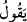
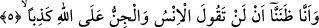

kudretini ortaya koymak ve O’nun zâtını her türlü sıfatlardan kemâle erdirmek içindir.
4. Doğrusu bizim beyinsiz olanımız (iblis veya azgın cinler), Allah hakkında pek
aşırı yalanlar uyduruyormuş.
Câhil olanımız saçma sapan şeyler söylüyormuş. “Sefiyhunâ/câhil, beyinsiz
olanımız” kelimesi ile kasdedilen iblistir ya da cinlerin azgınlarıdır. Sefîh kelimesi ile
cins kasdedilmektedir. Âyetin zâhirinden anlaşılan iblis’in de cinlerden olduğudur.
Nitekim Allah bu konuda bir başka âyet-i kerîmede şöyle buyurur: “Hani biz
meleklere: Âdem’e secde edin demiştik; iblis hâriç olmak üzere onlar hemen secde
ettiler. İblis cinlerdendi Rabbinin emrinden dışarı çıktı.” (el-Kehf, 18/50)
“Sefîh” kelimesinin kökü olan “sefeh”; -Kamus’un işâret ettiği üzere- ağırbaşlılık
anlamına “hılm”, hafiflik veya bunun zıddı ya da cehâlet anlamına gelir. Râğıb
İsfahânî’nin ifâdesine göre; “sefeh”, bedende hafiflik anlamınadır. Bu kelime akılda,
dini işlerde ve âhirete dâir konularda noksanlıktan dolayı hafif meşreplik anlamında
kullanılmıştır. Sefeh kelimesi ile âyet-i kerîmede kasdedilen dindeki sefehtir ki bu
âhirete dâir bir sefehtir. Nitekim Râğıb’ın Müfredât’ında bu şekilde yer almaktadır.
“Allah hakkında” anlamına gelen “
/alallahi” ifâdesi yukarda geçen “
/yekûlu” fiiline bağlıdır. Bu fiil “ala” harfi cerri almıştır. Çünkü o beyinsiz takımının
Allah hakkında söyledikleri O’nun lehine değil, aleyhine idi.
Âyette yer alan ve “saçma sapan şeyler” şeklinde tercüme edilen “
” kelimesi
zulümde ve başka konularda haddi aşmak anlamınadır.
Müfredat’ta açıklandığına göre “şatat” kelimesi uzaklıkta ifrâta kaçmak, aşırıya
gitmektir. Yâni o beyinsiz takım Allah Teâlâ hakkında şatat söylüyorlarmış. Yâni onlar
Allah hakkında haddi aşan, doğrudan uzak sözler söylüyormuş, demektir. Ya da şatat
demek haktan son derece uzak olduğu için bizâtihi kendisi saçma sapan olan söz
demektir. Onların söyledikleri sözün masdarla vasfedilmesi, anlama mübâlağa katmak
içindir. “Saçma sapan söz”le kasdedilen Cenâb-ı Hakk’a eş ve çocuk isnâd etmektir.
Âyet-i kerîme işâret ediyor ki: Bilgisi ile amel etmeyen âlim kimse, câhil
hükmündedir. Çünkü iblis ilim ehli idi ama bu ilmiyle amel etmeyince, beyinsiz, câhil
olarak nitelenmiştir. Dolayısıyla onu taklîd etmek câiz değildir. Câhile ve o hükümde
olan birisine uymak doğrudan doğruya şeytana uymak demektir. Şeytan ise ateşe çağırır.
Çünkü ondan yaratılmıştır.